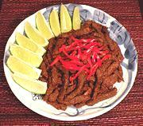

|
Beef & Sesame Stir FryVietnam - Thit Bo Luc Lac | ||||
| Serves: Effort: Sched: DoAhead: |
2 main ** 1 hr Yes |
This highly flavored dish is unusually flexible. It can be a simple main course, a side in an Asian style meal, or an appetizer, warm or cold. It has some chili bite, but actually quite tolerable. | |||
|
1 ------- 1 2 2 1/2 ------- 2 2 1 2 3 1/3 1/4 ------- ------- |
# ---- T T T t ---- cl T T T t t ---- ---- |
Beef (1) -- Marinade Oil Fish Sauce Soy Sauce Sugar ------- Garlic Thai Chili (2) Oil Sesame Paste (3) Stock Salt Pepper -- Garnish Chili Strips (4) -- Serve With Lime Wedges |
Prep - (40 min - 15 min work)
|